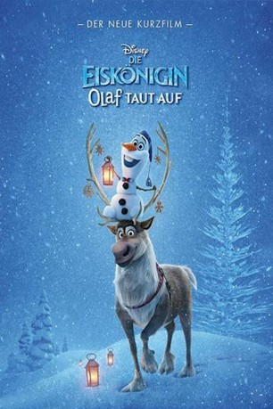

gesehen am 02.01.2018
gesehen am 02.01.2018Alternativ: Olaf's Frozen Adventure gesehen am 02.01.2018
 
 IMDB-Wertung: 5.2 / 10
IMDB-Wertung: 5.2 / 10  Metascore:
Metascore: 
Ein Weihnachts-Special zum beliebten Charakter aus "Frozen - Die Eiskönigin".
WEBHDRIP DUBBED LAMEMIX
Jahr: 2017
Dauer: 22 Minuten
FSK: 0
Land: USA Studio: Walt Disney Studios Motion PicturesTonspuren: DD5.1 - ,
Untertitel:
Auflösung: 1080p (1920x1080) Größe: 965 MB
Genre: Komödie, Abenteuer, Fantasy, Animation/Trick, Familie, Kurzfilm, Musical
Regisseur: Kevin Deters, Stevie Wermers
Drehbuch: Chris Buck
Soundtrack:
Darsteller:
 Jonathan Groff als
Jonathan Groff als  Kristen Bell als Anna
Kristen Bell als Anna Josh Gad als Olaf
Josh Gad als OlafDatei: X:\Kinder Disney HD\Eiskönigin\Eiskönigin - Olaf taut auf (2017, FSK0, 1920x1080).mkv seit 04.12.2017
Festplatte: Kinder-Filme+Trick
 Es gibt insgesamt 9 Filme in der Gruppe 'Kinder Disney HD\Eiskönigin'
Es gibt insgesamt 9 Filme in der Gruppe 'Kinder Disney HD\Eiskönigin'